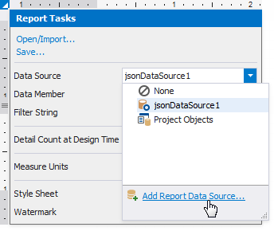
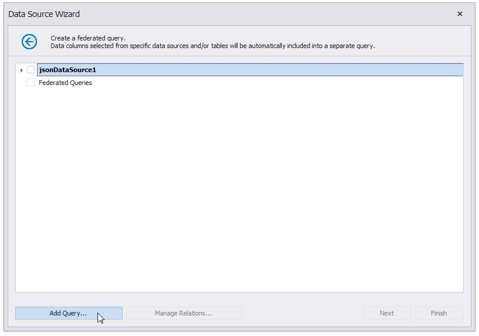
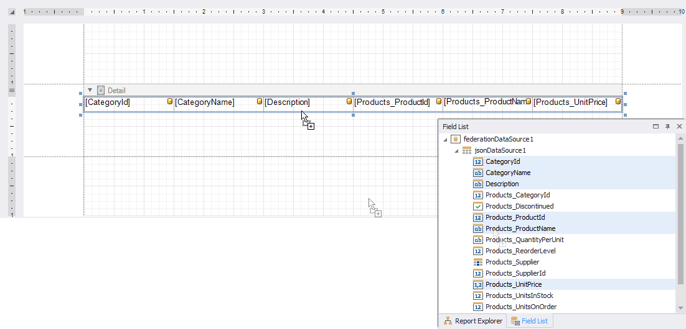
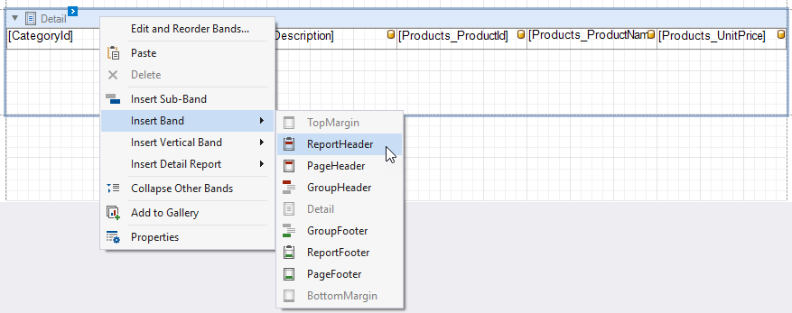
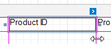
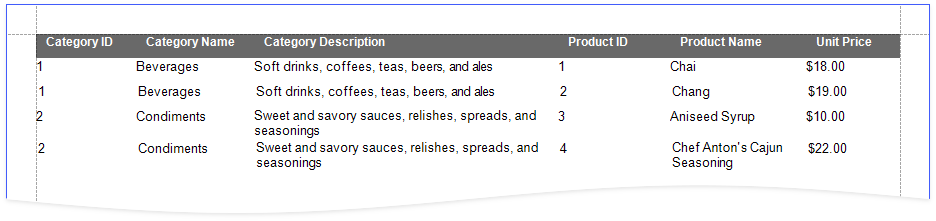

Bind a Report to a Transformation-Based Data Source
If you bind a report to a JSON, Object, Entity Framework, or XPO data source that contains a collection property, you can flatten the data source structure:

This tutorial illustrates how to use the Federation Data Source's Transformation mode to flatten a JSON Data Source that contains a collection property.
Create a Report and Bind it to a Data Source
-
This tutorial uses the following JSON string:
[ { "CategoryId": 1, "CategoryName": "Beverages", "Description": "Soft drinks, coffees, teas, beers, and ales", "Products": [ { "ProductId": 1, "ProductName": "Chai", "SupplierId": 1, "CategoryId": 1, "QuantityPerUnit": "10 boxes x 20 bags", "UnitPrice": 18.0000, "UnitsInStock": 39, "UnitsOnOrder": 0, "ReorderLevel": 10, "Discontinued": false, "Supplier": null }, { "ProductId": 2, "ProductName": "Chang", "SupplierId": 1, "CategoryId": 1, "QuantityPerUnit": "24 - 12 oz bottles", "UnitPrice": 19.0000, "UnitsInStock": 17, "UnitsOnOrder": 40, "ReorderLevel": 25, "Discontinued": false, "Supplier": null } ] }, { "CategoryId": 2, "CategoryName": "Condiments", "Description": "Sweet and savory sauces, relishes, spreads, and seasonings", "Products": [ { "ProductId": 3, "ProductName": "Aniseed Syrup", "SupplierId": 1, "CategoryId": 2, "QuantityPerUnit": "12 - 550 ml bottles", "UnitPrice": 10.0000, "UnitsInStock": 13, "UnitsOnOrder": 70, "ReorderLevel": 25, "Discontinued": false, "Supplier": null }, { "ProductId": 4, "ProductName": "Chef Anton's Cajun Seasoning", "SupplierId": 2, "CategoryId": 2, "QuantityPerUnit": "48 - 6 oz jars", "UnitPrice": 22.0000, "UnitsInStock": 53, "UnitsOnOrder": 0, "ReorderLevel": 0, "Discontinued": false, "Supplier": null } ] } ]
The Field List displays the created JSON data source.

Create Data Federation and Transform the Data Source
Click the report's smart tag, expand the DataSource property's drop-down menu, and click Add Report Data Source.

In the invoked Data Source Wizard, select Data Federation and click Next.

On the next page, click Add Query.

In the invoked Query Builder, select the Transformation query type. Select the data source or query that contains columns you want to transform. Select the Transform check box next to the column you need to unfold and flatten. The bottom pane allows you to specify the aliases for the generated columns.

Click OK to create the query and click Finish to create the data source.
The Field List displays the created Federation Data Source.

Prepare the Report Layout
Set the Landscape orientation for report pages. Select the report and switch to the Properties panel. Enable the Landscape property.

Drop data fields from the Field List onto the report's Detail band. Hold CTRL or SHIFT and click the fields to select multiple fields.

Add a ReportHeader band to the report. Right-click the report and select Insert Band / ReportHeader.

Create headers for the report columns. Select data fields and drop them onto the added ReportHeader band with the right mouse button.

Change header titles as necessary. Double-click a cell and type the new title.

Resize report columns. Select cells and drag their edges.

Change the header cells' appearance. Select cells and specify the following properties:
Property Value Foreground Color White Background Color DimGray Padding 10, 10, 0, 0 Font Arial, 9pt, style=Bold 
Change the band heights to match the table rows. Select the bands and drag their edges the same way as for the table cells.
Add a style for the table's even rows. Select TableRow2 in the Properties window, expand the Styles property, and select New for the Even Style property. Then select Style1 and set the Background Color property to 216, 216, 216.

Format the price values. Select the cell that displays the Products_UnitPrice value and set its [Format String] to {0:c2}.

The report is ready. Upper-level data source records are repeated as many times as there are flattened records:
